← 返回 Quick 评审台三國志演義 · Quick
10 条 · 映照4 人物1 洞见2 故事2 冷知识1 · 更新 2026-07-12 08:24
78映照scene公版✓ 判官过审曹操这句话，说透了人性自私
🎬 曹操说了一句话，被骂了一千八百年，但看完你可能会沉默。
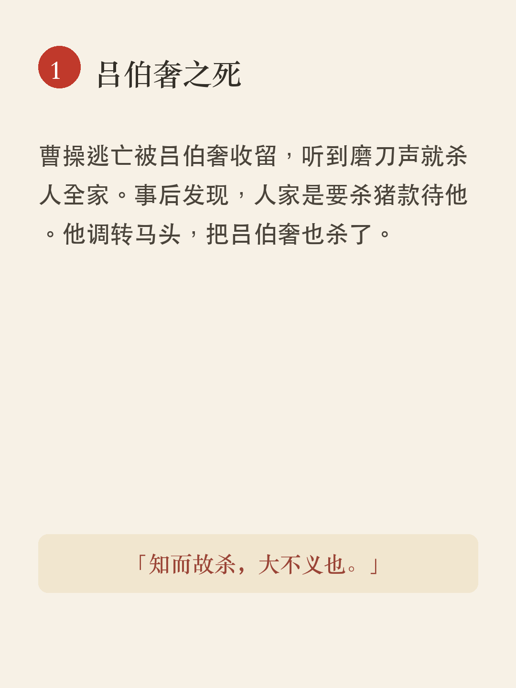
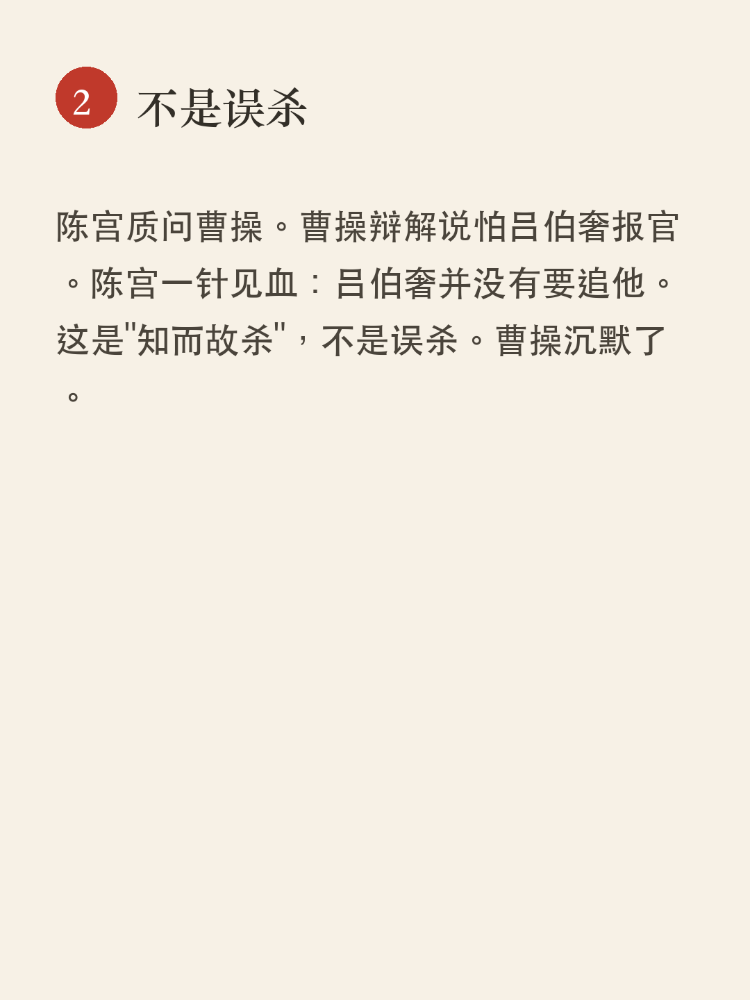
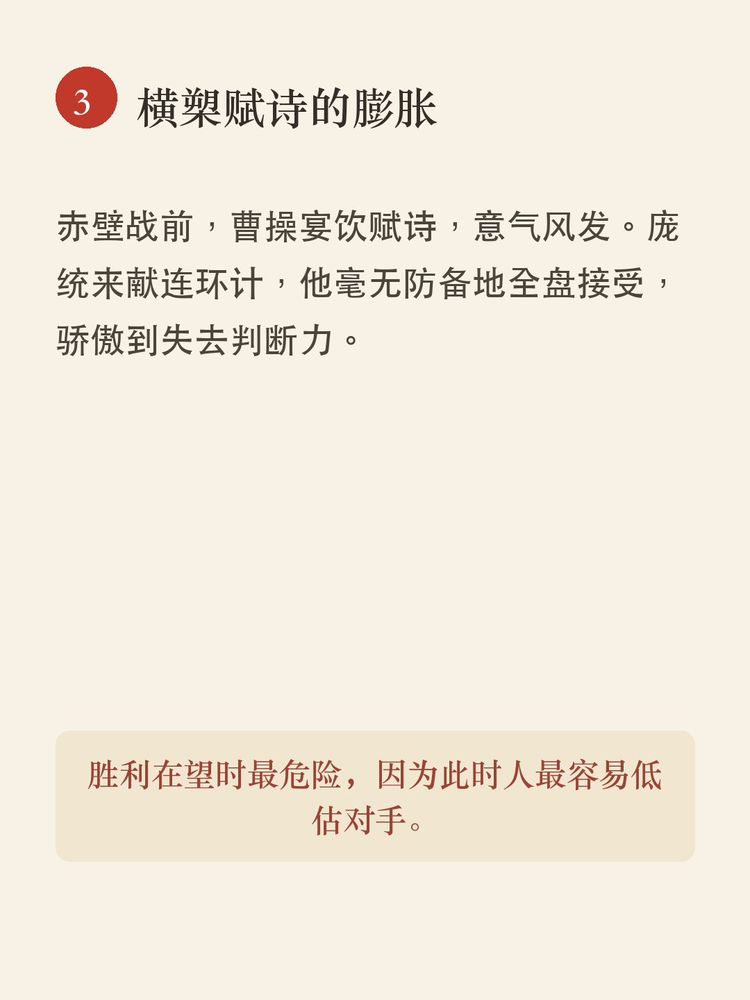
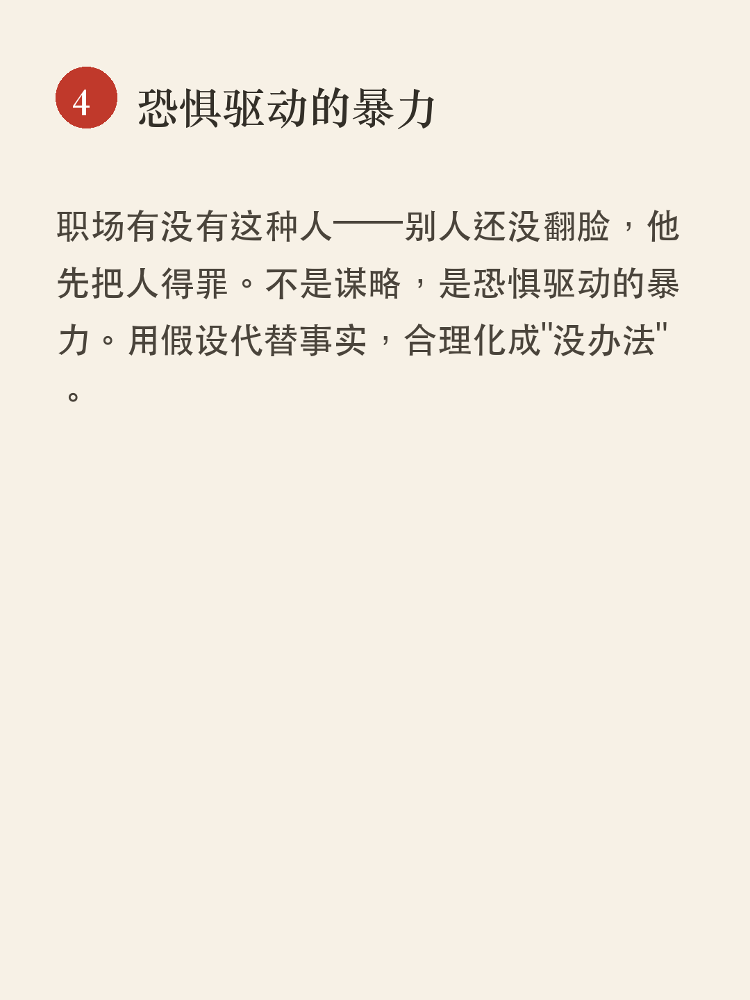
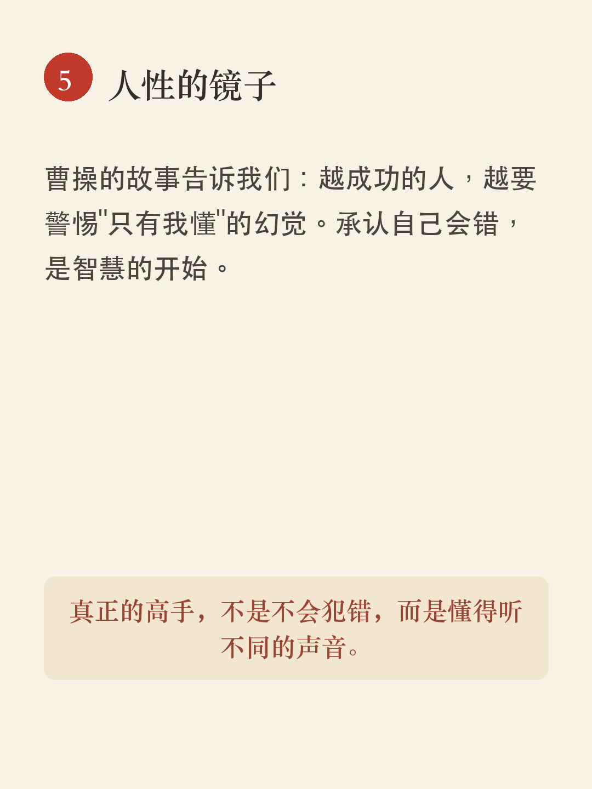
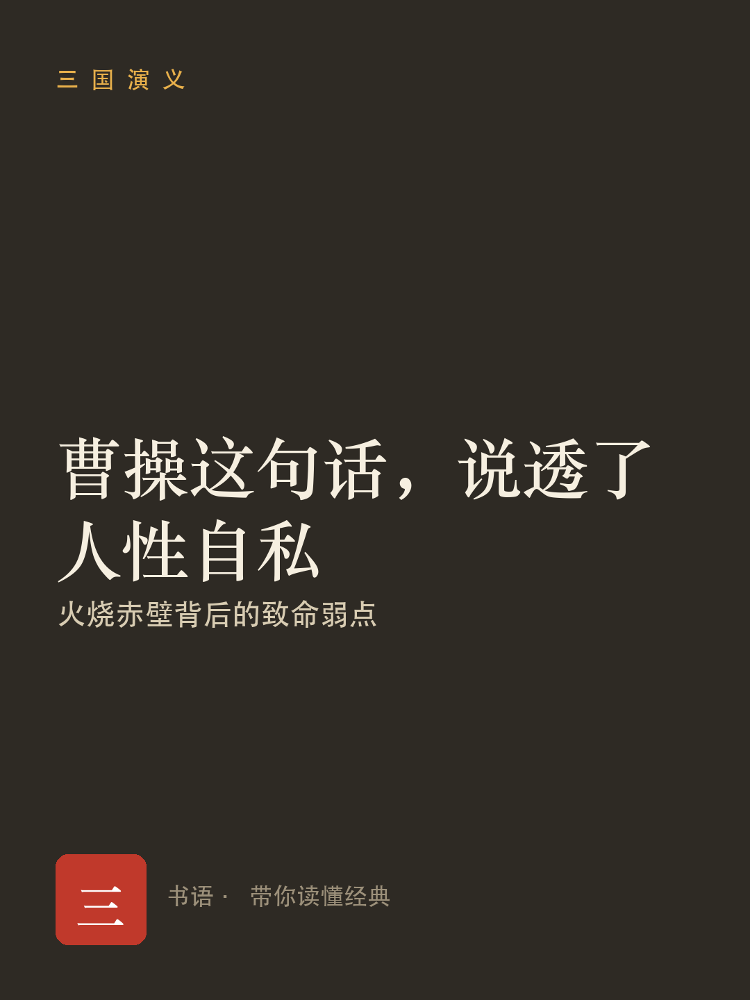
口播稿全文
你有没有过这种经历——帮了别人的忙，对方转头就忘了；你替人背了锅，结果背锅的人反而升职了。你心里憋屈，嘴上却说不出那句"凭什么"。
今天要说的这个人，曹操，他在逃亡路上说了一句话，被骂了一千八百年。但你仔细想想，这话你可能也说过，只是没他那么极端。
事情发生在第四回。曹操刺杀董卓失败，仓皇出逃，路上被中牟县令陈宫抓住。陈宫本想把他押解进京领赏，结果听了曹操一番话——什么"屈身事董卓，欲乘间图之"，什么"发矫诏，召天下诸侯兴兵共诛董卓"——陈宫居然被感动了，辞了官，跟着曹操跑了。
两个人逃亡路上，路过吕伯奢家。吕伯奢是曹操父亲的结义兄弟，见了曹操高兴得不行，说"老夫家无好酒，容往西村沽一樽来相待"，说完骑着驴就出去了。
曹操和陈宫在庄里等着，等着等着，听到后院有磨刀声，还听见有人说"缚而杀之，何如"。
曹操二话不说，拔剑就冲进去，不管男女老少，一口气杀了八口。然后搜到厨房，发现绑着一头猪——人家是要杀猪款待他。
杀错了。
陈宫说："孟德心多，误杀好人矣。"
曹操没说话，拉着陈宫上马就跑。跑到半路，碰见吕伯奢骑着驴回来，驴上挂着酒和果菜。吕伯奢喊："贤侄与使君何故便去？"曹操说"被罪之人，不敢久住"。吕伯奢还劝呢："吾已分付家人宰一猪相款，贤侄使君何憎一宿？速请转骑。"
曹操没回头。
他走了几步，忽然拔剑，调转马头，把吕伯奢也杀了。
陈宫大惊："适才误耳，今何为也？"
注意，曹操这句话——原文是"伯奢到家，见杀死多人，安肯干休？若率众来追，必遭其祸矣。"
但陈宫直接点破了他："知而故杀，大不义也。"
陈宫说出了那个他不愿承认的事实：吕伯奢并没有要追他，没有告发他，曹操杀他，是因为怕他回家看见死人，去报官。这是"知而故杀"，不是误杀。
曹操怎么回应的？
"宁教我负天下人，休教天下人负我。"
陈宫沉默了。
那一夜，陈宫翻来覆去睡不着，最后想拔剑杀了曹操。他的内心独白是："我将谓曹操是好人，弃官跟他；原来是个狠心之徒！今日留之，必为后患。"
你看，这句话的可怕之处不在于"负天下人"这四个字有多狂，而在于它背后的那个逻辑链条——
吕伯奢要杀吗？不杀也可以跑。但曹操选择杀。为什么？因为他预设了对方的反应。他觉得"伯奢到家，见杀死多人，安肯干休"，所以"若率众来追，必遭其祸"。他不是在处理已经发生的事，他是在提前处理一个"可能发生"的威胁。
这个逻辑，你细想，有没有觉得熟悉？
职场里有没有这种人——别人还没翻脸，他先把人得罪了；别人还没动他，他先下手把别人踢出局。你问他为什么，他说"我不先动手，迟早被他搞"。
这不是谋略，这是恐惧驱动的暴力。
曹操那句话之所以被骂了一千八百年，不是因为他自私——人都有自私，人得保护自己——而是因为他把这个自私说出来了，还当成了一种可以坦然承认的信条。
更可怕的是，他说这话的时候，语境是他刚刚杀了吕伯奢。他不是"不得不负人"，他是"宁可负人"，把主动权拿在自己手里。这是把自私从本能升级成了原则。
我们普通人不会到这个程度，但我们身上有同一个心理原型——
一旦预感到可能被伤害，就提前动手；一旦觉得自己站在弱势，就先发制人地把别人推到对立面。这不是"保护自己"，这是用恐惧代替判断，用假设代替事实，然后把这个过程合理化成"没办法"。
曹操说"宁教我负天下人"，但你看他负了谁？吕伯奢一家。八个无辜的人。这八个人的命，在"我"的生存面前，轻如鸿毛。
陈宫后来的选择是什么？他没有继续跟着曹操。他走了。
不是因为曹操能力不行，是因为他看清了一件事——和恐惧为伍的人，最后会被自己的恐惧吞噬。今天他杀吕伯奢，明天就会杀任何挡路的人。
所以这句话，与其说是"说透了人性自私"，不如说它是撕开了人性里最难看的那层皮：
我们不是不能自私，我们是不敢承认自己在自私，于是给它裹上一层"不得不"的糖衣。
你下次想说"没办法，我只能这样"的时候，问自己一句——是真没办法，还是我懒得去想别的办法？
🧑⚖️ 判官 78 · 把抓捕细节改准；“陈宫离开”要么删要么补引后文原句；若能顺带区分《演义》与史实并增加旁证，将更显厚度。
维度 钩子5 清晰4 收获4 透彻3 忠实3 论证诚实4 节奏4 · 锚 [第四回·曹操名言]
82映照scene公版✓ 判官过审刘备临终遗言，全网点赞破百万
🎬 刘备死前对儿子说了句话，两千年来无数人当成人生信条。
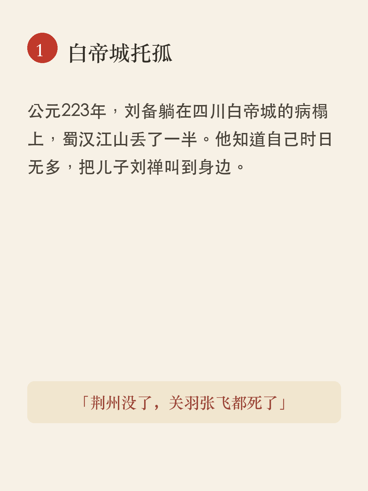
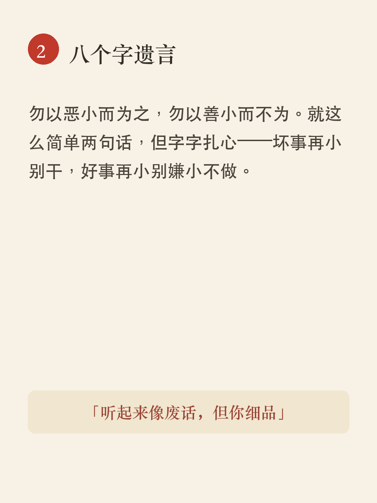
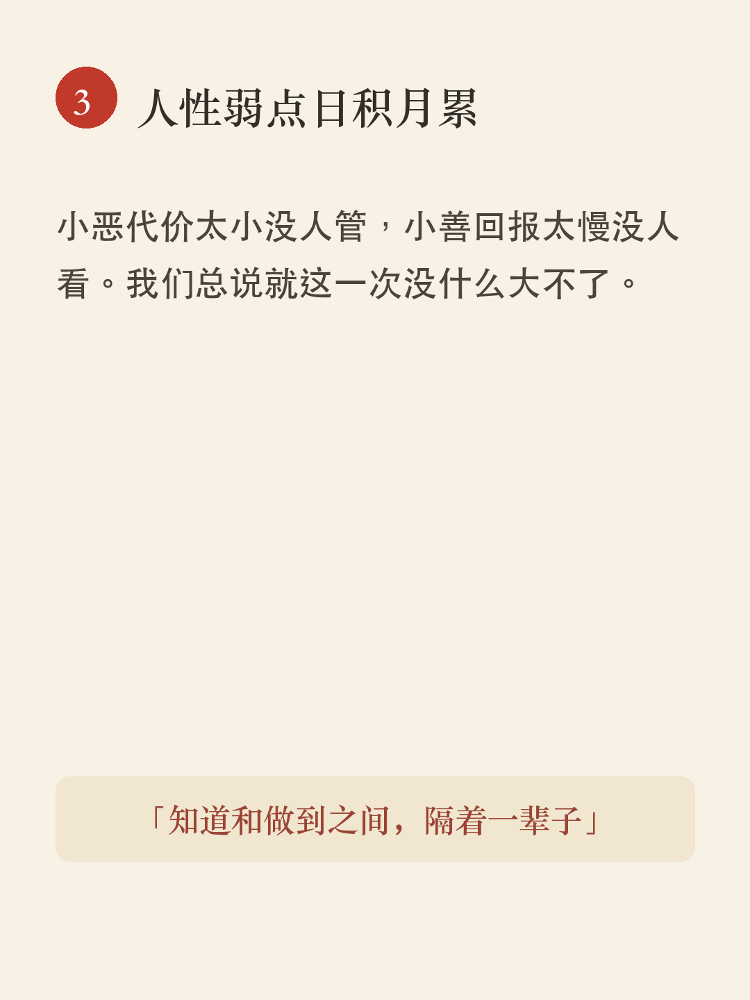
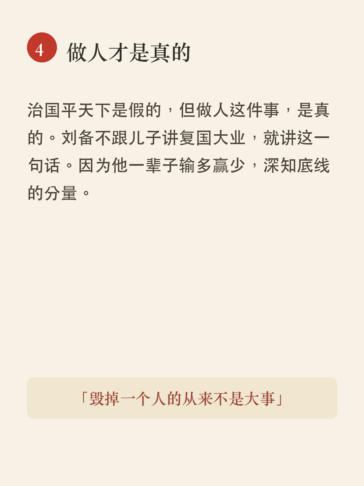
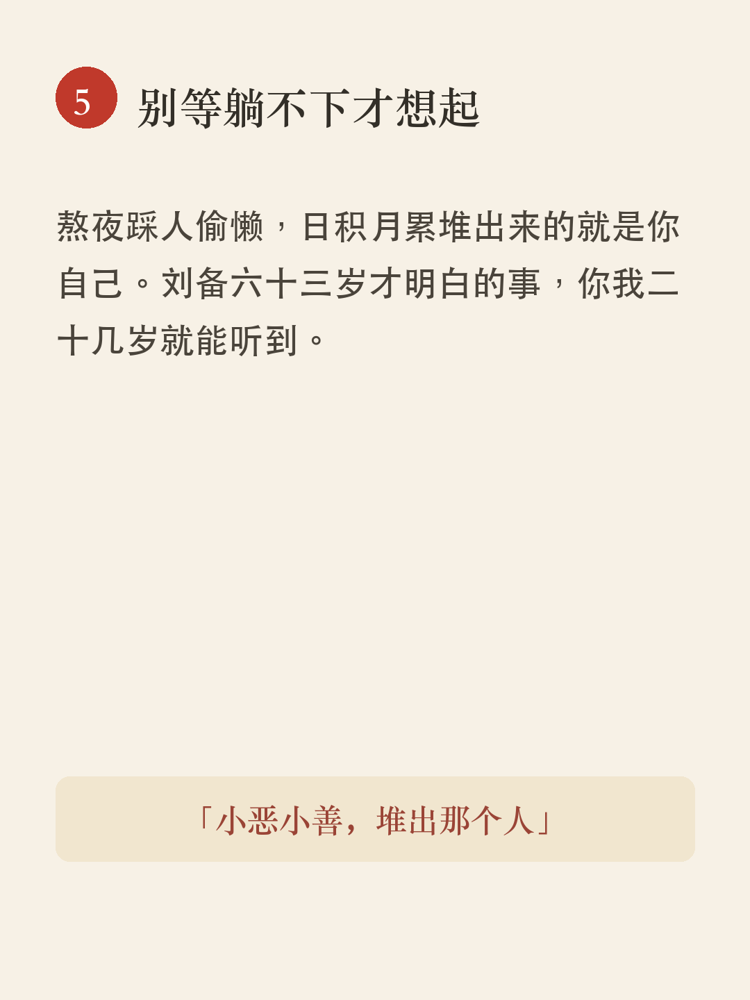
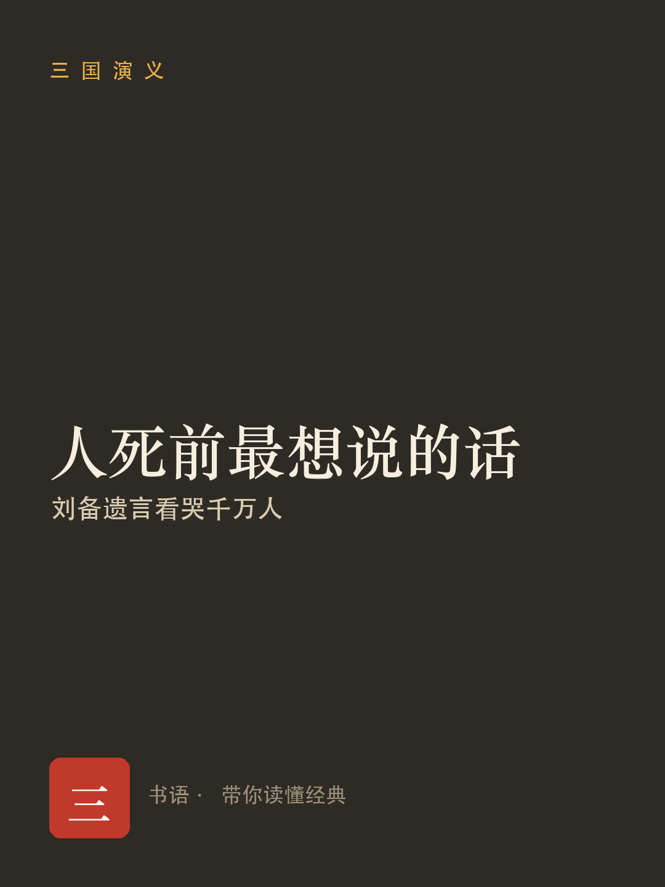
口播稿全文
你有没有想过，一个人快死的时候，最想对儿子说的话是什么？
不是家产怎么分，不是仇人怎么报，而是这两句话——**勿以恶小而为之，勿以善小而不为**。
这句话你可能从小听到大，甚至写进了作文里。但你未必知道，这两句话的背后，是一个六十三岁老人，在生命最后时刻，写给儿子的遗诏。
《三国演义》第八十五回，白帝城。刘备躺在永安宫的龙榻上，两目昏花，厌见侍从，叱退左右。那天晚上，他梦见关羽和张飞站在灯影里。醒来之后，他知道自己的时间不多了。
他做的第一件事，是派人把诸葛亮从成都叫来。召丞相诸葛亮、尚书令李严等，星夜来永安宫，听受遗命——既托孤，又写遗诏。
遗诏原文里有一段话，我原文念给你听——他说：“朕初得疾，但下痢耳；后转生杂病，殆不自济。朕闻‘人年五十，不称夭寿’。今朕六十有余，死复何恨？但以汝兄弟为念耳。勉之！勉之！勿以恶小而为之，勿以善小而不为。惟贤惟德可以服人；汝父德薄，不足效也。”
他说得很克制，甚至有点不好意思——“汝父德薄，不足效也”。一个皇帝，临死前对儿子说的最重要的话，不是“你要守住江山”，而是“你别觉得爸有多厉害”。
他只说了一件事：**做人**。
不是权谋，不是手段，不是厚黑学，而是最朴素的十四字箴言：小恶不要做，小善不要忽略。
你发现没有，这两句话听上去简单到近乎废话，但凡是个正常人都知道。可问题在于，知道和做到之间，隔着的是一辈子。
为什么？因为人性有一个弱点——小恶的代价看起来太小了，抽烟熬夜拖延一次，哪有立刻的报应？小善的回报看起来也太慢了，帮人一把没人看见，忍一口气没人感谢。
所以我们总是告诉自己：就这一次，没什么大不了。
但刘备这辈子见过太多“就这一次”的人——他的仇人，他的盟友，甚至他自己。临死前他明言后悔的，不是当年没有更狠，而是“智识浅陋，不纳丞相之言，自取其败”。
他不是输在不够奸，是输在不够稳。
所以他把这句话留给儿子，不是讲道理，是**托命**。
你看现代人，每天刷手机到凌晨两点，知道熬夜不好，但觉得一次没事；地铁上踩了别人一脚，知道不礼貌，但觉得懒得道歉；工作上偷懒耍滑，知道不该，但觉得老板看不见。
小恶小善，日积月累，最后堆出来的那个人，就是你。
刘备活到六十三岁才明白的事，你我二十几岁就能听到。这不是鸡汤，这是成本最低的人生经验——因为违背它的代价，要比你想象的晚很多，也重很多。
别等到躺不下的时候，才想起该说的话。
共勉。
🧑⚖️ 判官 82 · 别把复杂的遗诏简化成“只说做人”；补上“事丞相如父”等关键原文与诏书宣读细节，既忠实又显得更读透。
维度 钩子5 清晰5 收获4 透彻3 忠实4 论证诚实4 节奏5 · 锚 [第八十五回·白帝城托孤·刘备遗言]
72人物thread公版✓ 判官过审诸葛亮：天才的悲剧不在于输
🎬 诸葛亮不是输在能力，是输在一件事上——这件事我们今天还在犯。
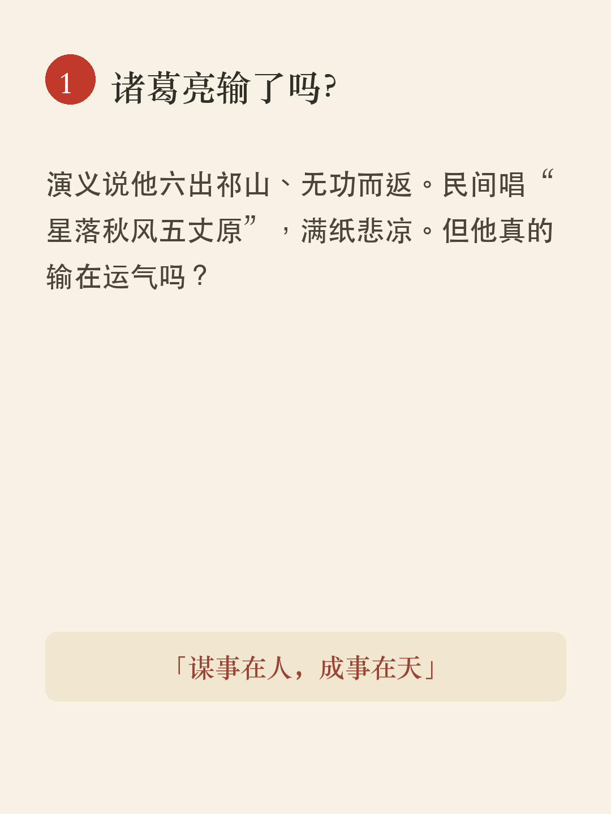
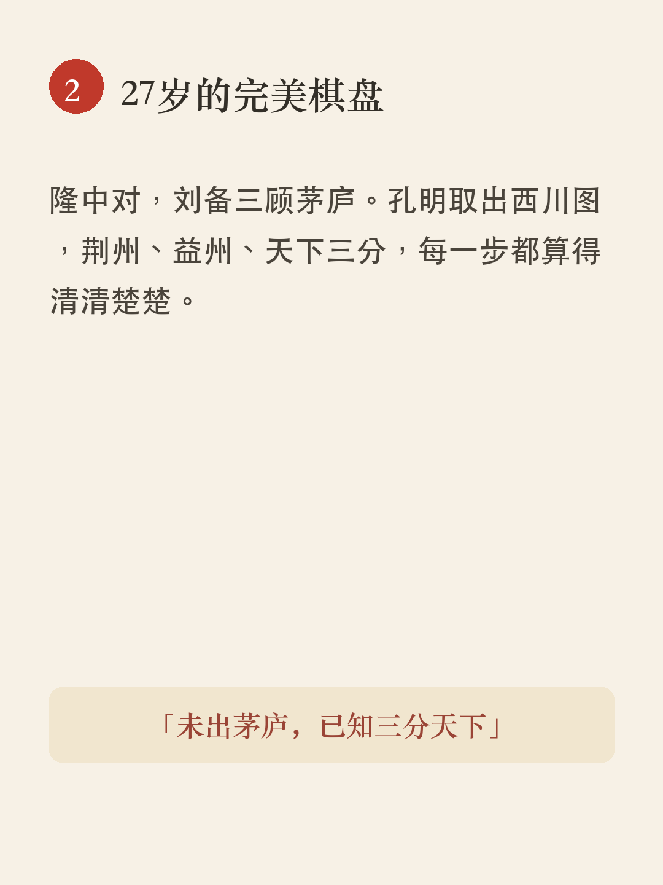
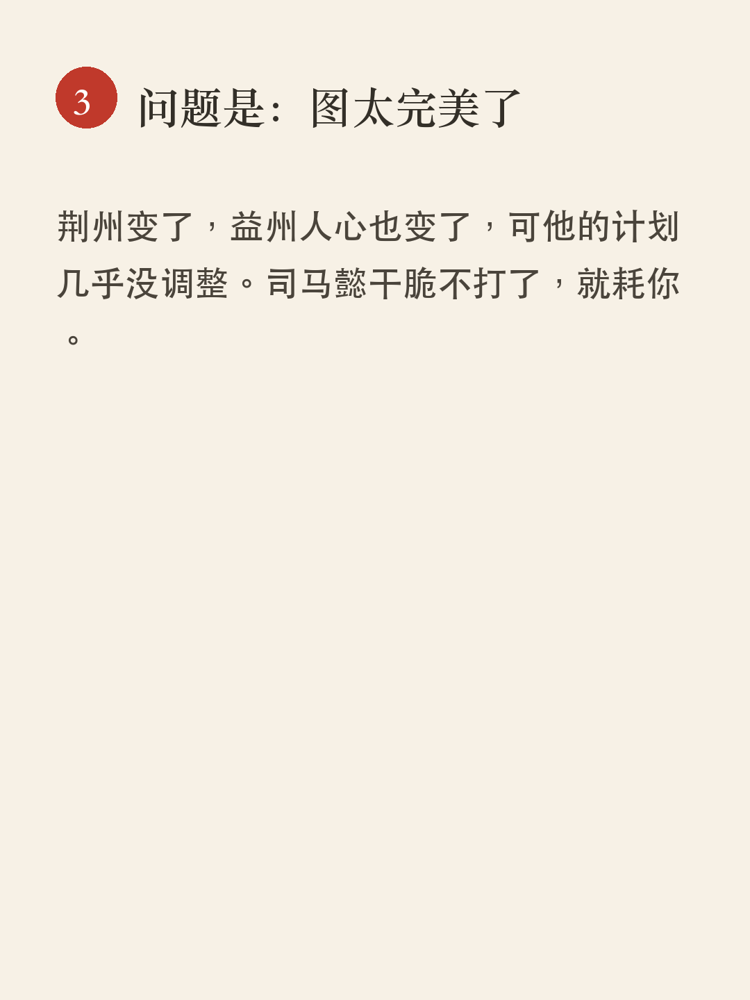
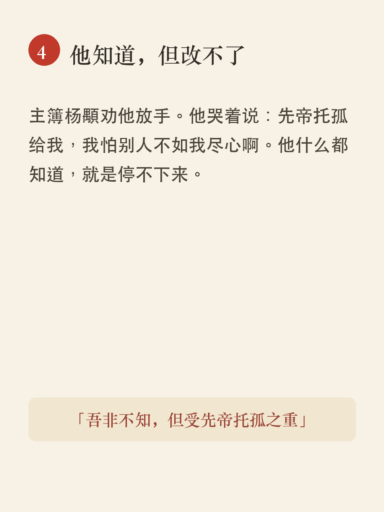
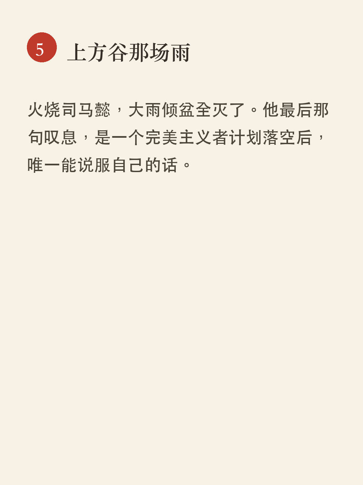
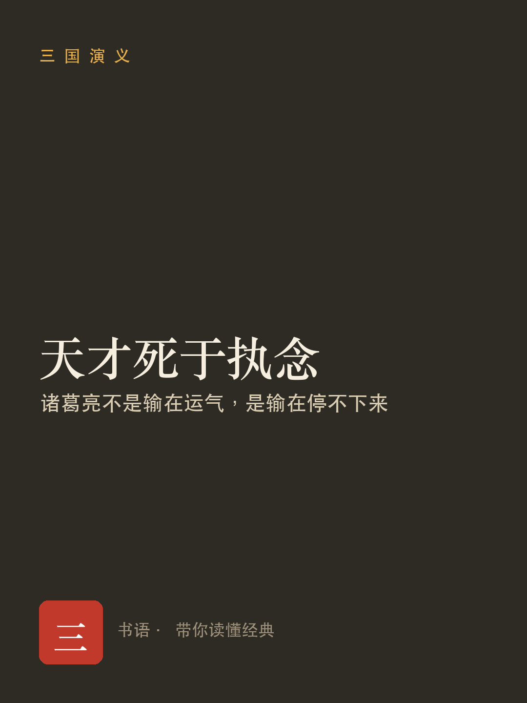
口播稿全文
很多人读三国，都觉得诸葛亮是个输家。
演义通行说法是六出祁山，无功而返，最后病死在五丈原。民间提起他，说的都是“星落秋风五丈原”，满纸悲凉。
但我想问你一个问题：诸葛亮输在哪儿？
很多人会说，他输在运气。你看上方谷那一把火，司马懿明明已经插翅难逃，结果老天突降大雨，把火全浇灭了。诸葛亮自己都仰天长叹，说了四个字：“谋事在人，成事在天。”
好像他输给了老天，输给了命。
但我告诉你，这个答案太轻巧了。
你仔细看演义里的诸葛亮，就会发现一个扎心的真相：他不是输在运气，他是输在一件事上——太相信自己的计划。
你回头看第三十八回，隆中对。先生尔时年三九，躲在南阳种地。刘备来了三趟，他才肯出山。取出西川图展示，说荆州、益州，天下三分，你取这两块地方，等时机到了，从宛洛和秦川两路出兵，大业可成。
你听他说这话的时候，演义里有一句原话：“只这一席话，乃孔明未出茅庐，已知三分天下，真万古人不及也。”
这就是他的本事。他脑子里有一张完美的棋盘，每一步怎么走，他全想清楚了。
问题就出在这儿。
他太相信这张图了。
后来荆州的局势变了，益州的人心也变了，可他的计划几乎没有调整过。你看他北伐，多次出祁山攻关中（据演义）。司马懿后来干脆不出战，就耗着你。诸葛亮送女人衣服去羞辱他，司马懿心中大怒；佯笑受之，随后上表请旨以坚守不战。
你猜诸葛亮什么反应？演义里写，他手下主簿杨顒劝他，说你一个丞相，丞相夙兴夜寐，罚二十以上皆亲览焉，你这哪是用人，你这是把自己累死啊。
你怎么回答的？
诸葛亮哭了。他说了一句话——“吾非不知，但受先帝托孤之重，惟恐他人不似我尽心也。”
什么意思？我什么都知道，我知道该放手，但我放不下。为什么？先帝把后事托给我了，我怕别人不像我这么上心。
这句话太重了。
他不是不知道问题在哪。他是知道，但他改不了。
上方谷那场火，是最残忍的一个注脚。他设计让司马懿钻进山谷，地雷火箭一起放，烧得魏兵满地打滚。演义写他“一霎时火光大起，心中甚喜，以为司马懿此番必死”。他觉得计划要成了。结果呢？大雨倾盆，火全灭了。司马懿爬起来就跑了。
他最后那句叹息不是谦虚：“谋事在人，成事在天。”那是一个完美主义者，在计划落空之后，唯一能说服自己的话。
他到死都没有承认，真正的盲区不是老天爷，而是他那张图太完美了，完美到他没办法接受计划会失败，完美到他没办法在合适的时候说一声“算了，换条路”。
五丈原那晚，他还在看天象，日则计议军机，夜则布罡踏斗，还在交代后事怎么撤退、谁断后。演义写他“扶病理事，吐血不止”。一个五十四岁的人，把自己耗尽在一张他二十七岁画下的蓝图里。
他赢过很多仗，但最后这一局，他输给的不是司马懿，输给的是那个“再试一次”的执念。
你说完美主义者最大的悲剧是什么？不是做不好，是停不下来。
诸葛亮给我们的教训，不是“天命难违”，而是另一句话：有时候，放手不是认输，是止损。
🧑⚖️ 判官 72 · 校正细节与引语归属（尤其司马懿“请战/坚守”的因果与杨顒台词），宏观判断需用锚文证据链撑住，避免“一图不变”的泛化。
维度 钩子4 清晰4 收获3 透彻3 忠实3 论证诚实3 节奏4 · 锚 [第三十八回隆中对, 第一○三回上方谷大雨, 第一○四回五丈原病逝]
80洞见scene公版✓ 判官过审曹操和刘备，到底谁才是真英雄
🎬 曹操说天下只有他和刘备是英雄——但一千八百年后，我们对这个问题有了新答案。
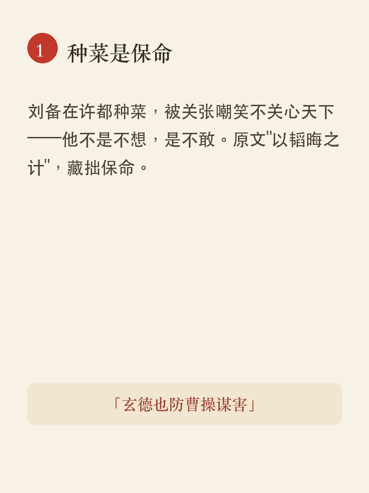
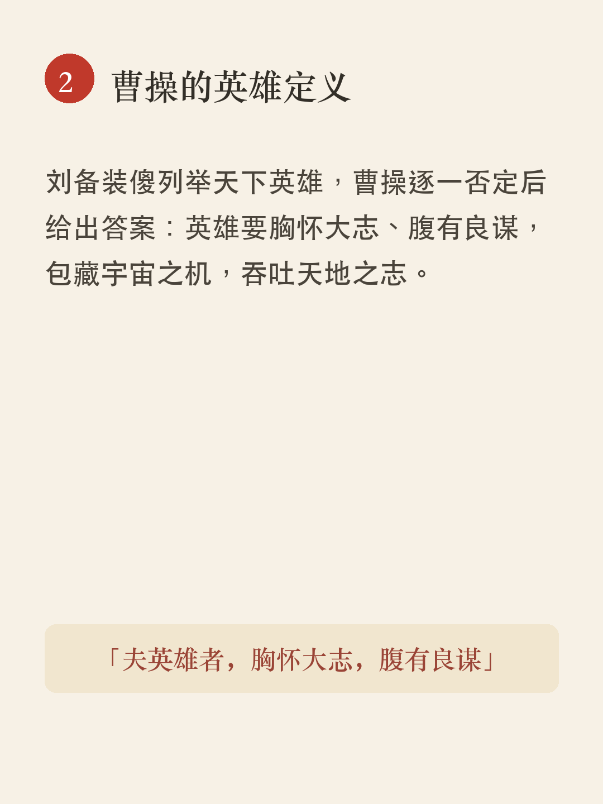
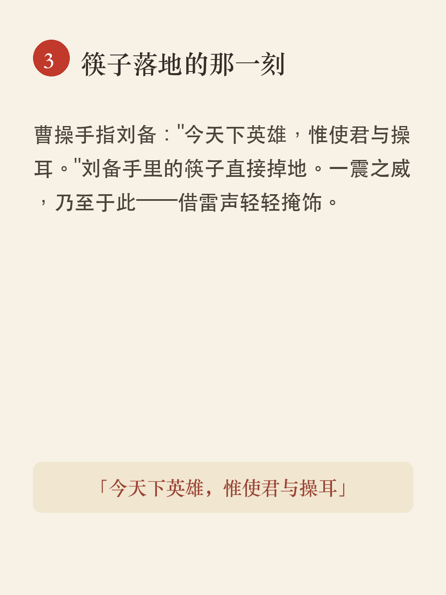
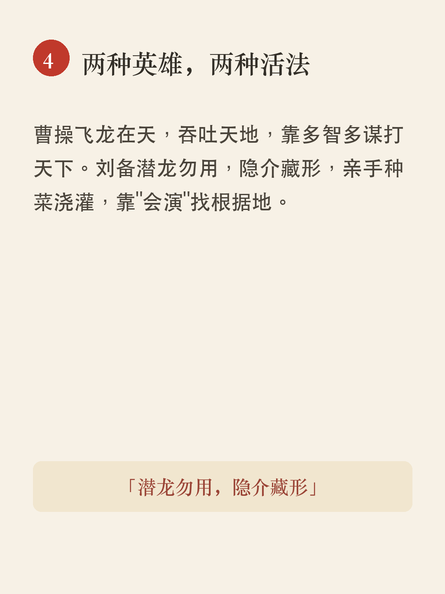
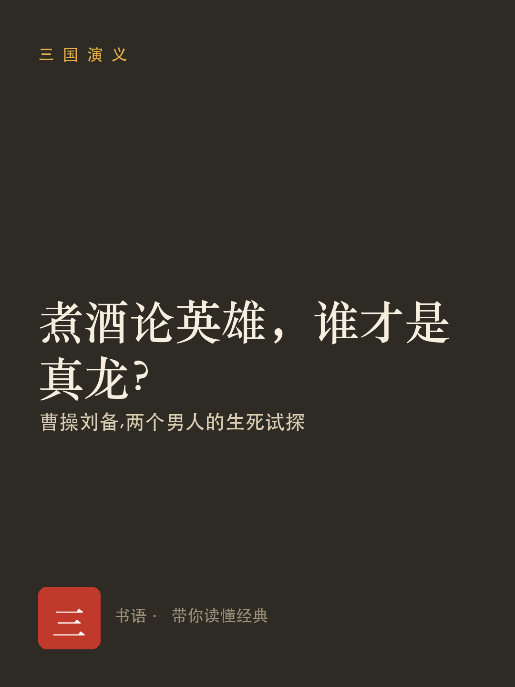
口播稿全文
你可能听说过曹操那句名言——“今天下英雄，惟使君与操耳”，但你知道这话到底是怎么说出来的吗？
话说刘备受曹操控制，在许都以种菜韬晦自保。关羽张飞都看不下去了，说大哥你怎么整天摆弄这些小菜，不关心天下大事？刘备心里苦啊，他不是不想，是不敢。这段原文写得很有意思：“玄德也防曹操谋害，就下处后园种菜，亲自浇灌，以韬晦之计。”——他是在藏拙，是在保命。
结果有一天，曹操突然派人来请他喝酒。刘备吓得脸都白了，以为东窗事发。去了才知道，曹操在后园小亭摆了一盘青梅，煮了一壶酒，就为了和他聊天。
酒喝到一半，天上阴云密布，眼看要下大雨。曹操指着天外“龙挂”（云气），引出龙喻英雄：“使君知龙之变化否？”然后话锋一转：“龙之为物，可比世之英雄。玄德久历四方，必知当世英雄。请试指言之。”
曹操这是在干什么？表面是聊天，实际上是在试探刘备——你这人到底有没有野心？
刘备开始装傻：“备肉眼安识英雄？”曹操说别谦虚。于是刘备一个个数：袁术、袁绍、刘表、孙策、刘璋……曹操每听一个就笑一声，说“冢中枯骨”“色厉胆薄，好谋无断”“虚名无实”……
原文这段对答非常精彩。曹操否定每个人的方式，恰恰暴露了他的标准——不是出身显赫就了不起，不是兵多粮足就了不起，而是“夫英雄者，胸怀大志，腹有良谋；有包藏宇宙之机，吞吐天地之志者也”。
然后高潮来了。曹操手指刘备，再指自己：“今天下英雄，惟使君与操耳。”
你猜刘备什么反应？原文四个字：“玄德闻言，吃了一惊，手中所执匙箸，不觉落于地下。”
但刘备毕竟是刘备。外面正好雷声大作，他就顺势捡起筷子说：“一震之威，乃至于此。”——我堂堂大丈夫也怕打雷啊。原文里还专门引用了一首诗夸他：“巧借闻雷来掩饰，随机应变信如神。”
所以这场煮酒论英雄，表面上是一场文人雅集，实际上是一场惊心动魄的心理博弈。曹操的“英雄”是有大志、要干大事的人，所以曹操识得刘备非常之志。而从刘备的处置看，他更重韬晦与伺机（解读），所以用雷声掩饰失惊。
一千八百年后，我们看这段故事，常常争论曹操和刘备谁才是真英雄。但原文里最深刻的，其实不是谁比谁厉害，而是两种截然不同的活法——一种像龙，主动出击、呼风唤雨；一种像鱼，暂时潜伏、伺机而动。
曹操够强，但他也因此树敌太多。刘备够韧，此后势成三分（演义通识）。
原文里，刘备乘曹操授兵名义出征之机脱身，“此一行如鱼入大海，鸟上青霄，不受笼网之羁绊也”——那一刻，他终于不用再演那个种菜的伪隐士了。
所以你看，真英雄未必是那个最张扬的人，而是最懂得在合适的时候做合适的事的人。
就在这次对话里，曹操断言“惟使君与操耳”。至于谁更“英雄”——原文没说。
🧑⚖️ 判官 80 · 把引文逐字對齊原文、避免未錨定的宏觀評語；可補入“從人指龍掛”“聖人迅雷風烈必變”等原句與細節，提升質感與可信度。
维度 钩子4 清晰4 收获3 透彻3 忠实3 论证诚实4 节奏4 · 锚 [第二十一回·煮酒论英雄]
80映照scene公版✓ 判官过审刘备携民渡江：道义值多少钱
🎬 曹操追兵在后，刘备带着十万百姓慢慢走——这是圣人还是傻子？
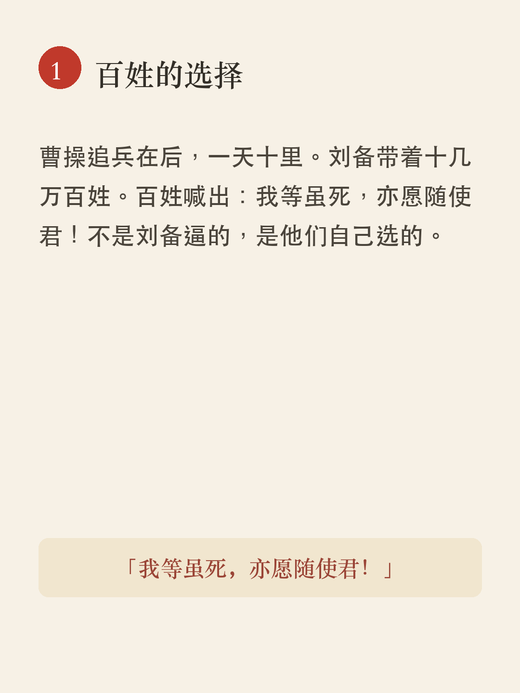
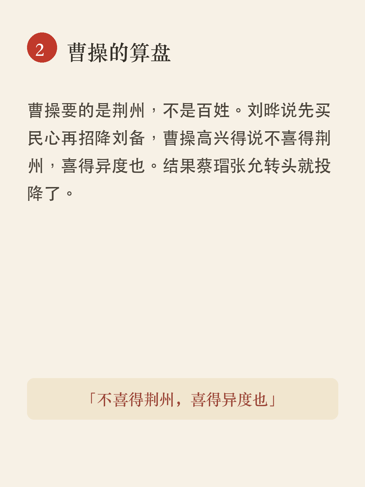
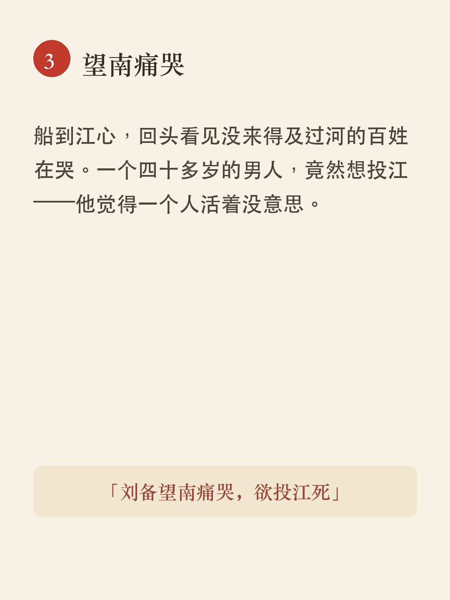
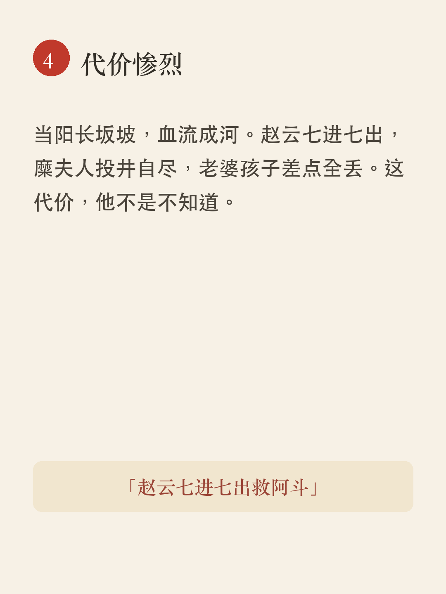
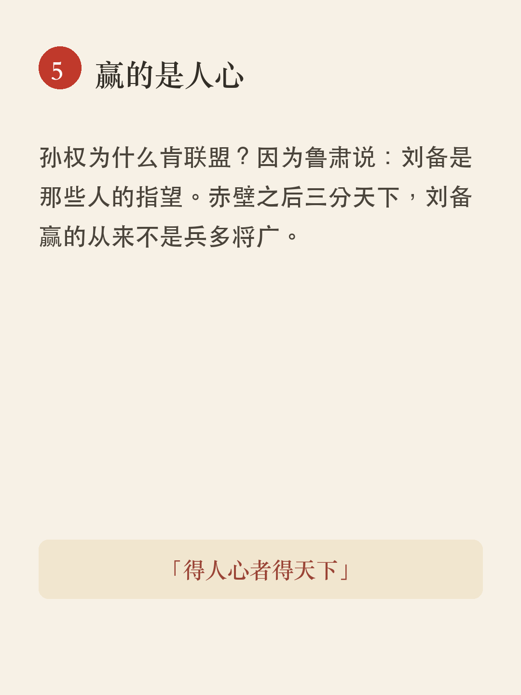
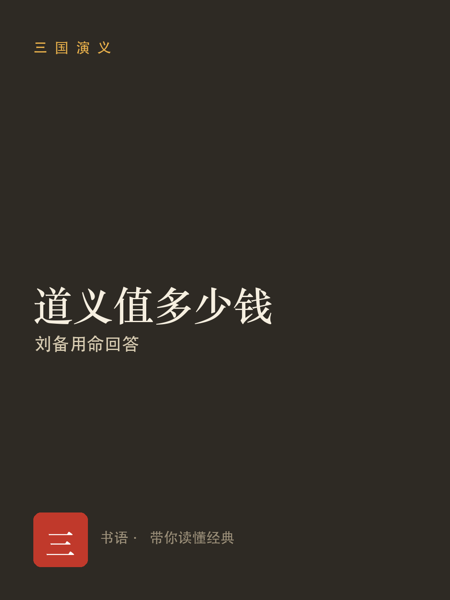
口播稿全文
曹操的追兵在后面，你能跑多快？一天十里。
但刘备带着十几万百姓，不是一个两个，是十几万。他能怎么办？孔明说，让百姓自己选——愿意跟的跟，不愿意的留下。刘备说什么？他说“奈百姓相随许久，安忍弃之？”——百姓跟了我这么久，我怎么忍心丢下他们？
那十几万人怎么选的？“我等虽死，亦愿随使君！”
你听清楚了没有？不是刘备逼着他们跟的，是百姓自己喊出来的。就算死，也要跟着走。
这就是最诡异的地方——刘备明明什么都没给，樊城新野，都是小地方，他是败军之将，连块像样的地盘都没有。可这十几万人，就是愿意跟他走。
为什么？
因为曹操那边的刘晔说了，要先买民心，再招降刘备。什么意思？他要的是荆州，不是百姓。
但刘备不是。曹操派人来招降，徐庶来说，刘备怎么回的？原文两个字：“不敢强留”。徐庶自己说“不还，恐惹人笑”，所以刘备不敢强留。他自己被困成这样，还要脸。
到襄阳城下，蔡瑁张允拿箭射自己百姓，城里百姓在哭，城下也在哭。刘备站在城外，他怎么说的？“本欲保民，反害民也。吾不愿入襄阳！”——他想进城是为了救百姓，结果百姓因为他被射，他宁可不要这座城。
这不是表演。一个人表演一次可以，表演不到两章。
后来曹操追上来了，手下人全说丢下百姓快跑吧，历史上有过无数次这样的选择。大多数将帅常选择弃民自保，然刘备坚持不弃。
刘备怎么说的？“举大事者必以人为本。今人归我，奈何弃之？”
就是这句话。后来有首诗写他：“临难仁心存百姓，登舟挥泪动三军。至今凭吊襄江口，父老犹然忆使君。”
你发现没有，曹操的算盘打得最精。先派人招降刘备，不降就玉石俱焚，多划算。刘晔给他出这主意，他高兴得说“不喜得荆州，喜得异度也”。结果呢？蔡瑁张允两个卖国贼转头就投降了，荀攸说他们是“谄佞之徒”。
刘备没有算盘。他就是舍不得。
所以你说刘备傻不傻？他当然知道一天十里走不脱，他当然知道曹操八路大军马上就到，他当然知道糜夫人身受重伤、恐拖累赵云，坚不肯上马，遂投枯井。但他还是选了这条最慢、最笨、最危险的路。
因为他算的不是利益这笔账。
他算的是人。
今天你可能也在某些时刻要选。利益在右边，道义在左边，大多数时候不会有人给你发奖状，也不会有史书给你写一笔。你选哪个，其实没人在乎。
但刘备这一趟不是白走的。他最后有没有得到天下？不是。但他有没有得到人心？十几万百姓、魏延为他开门、文聘为他羞惭、赵云拼死护阿斗、糜夫人投井——这些人为什么要这么做？
因为他们知道，这个人不会丢下他们。
利益能买来一时，买不来人心。能用计策收服的，走投无路时也会背叛。但刘备用最笨的方式，赢了一样东西——
那是你拿多少钱都买不来的东西，也是刘备用一生告诉你的：有些账，不能算在利益里，只能算在人心里。
🧑⚖️ 判官 80 · 收紧因果与时间线，少做未锚定的泛化判断；引文注意叙述句与直接引语的区分。
维度 钩子4 清晰4 收获4 透彻3 忠实3 论证诚实3 节奏4 · 锚 [第四十一回·携民渡江]
76映照scene公版✓ 判官过审周瑜临死一句话，说破嫉妒的本质
🎬 周瑜临死前喊了一句话，揭示了一个人最loser的时刻是什么样子。
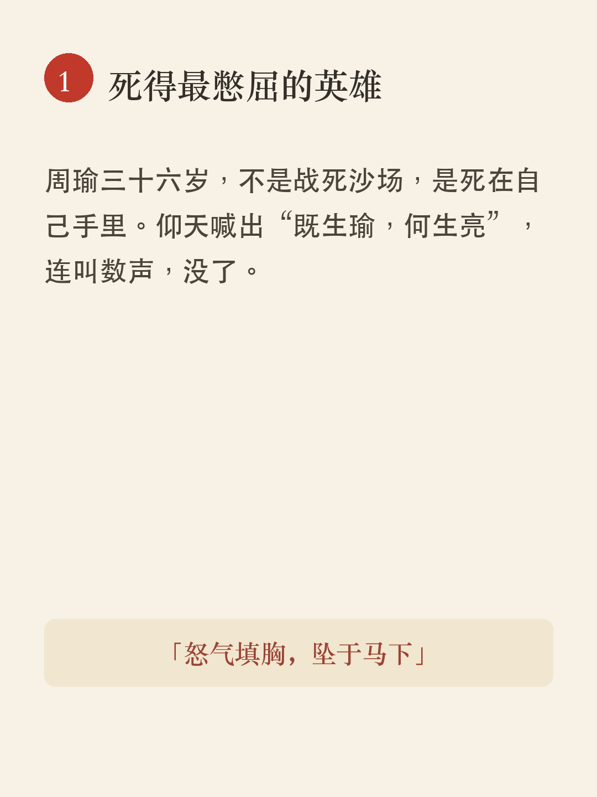
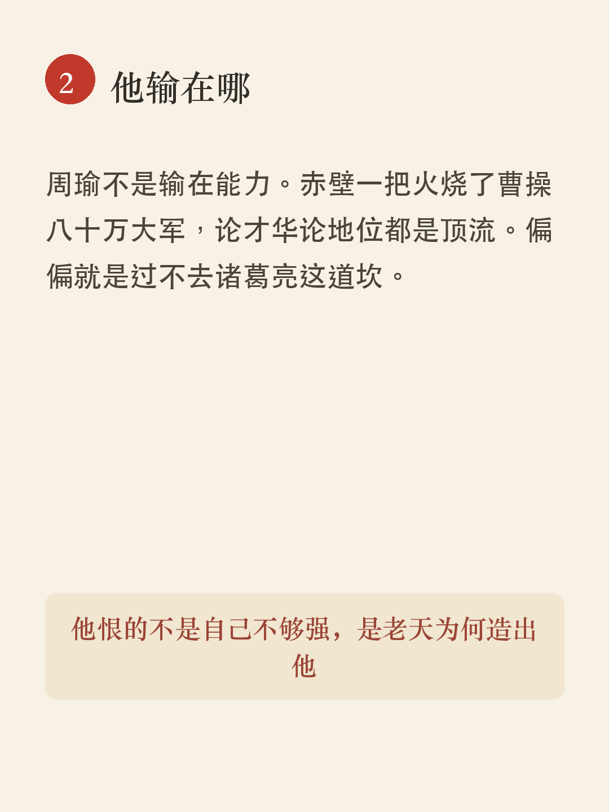
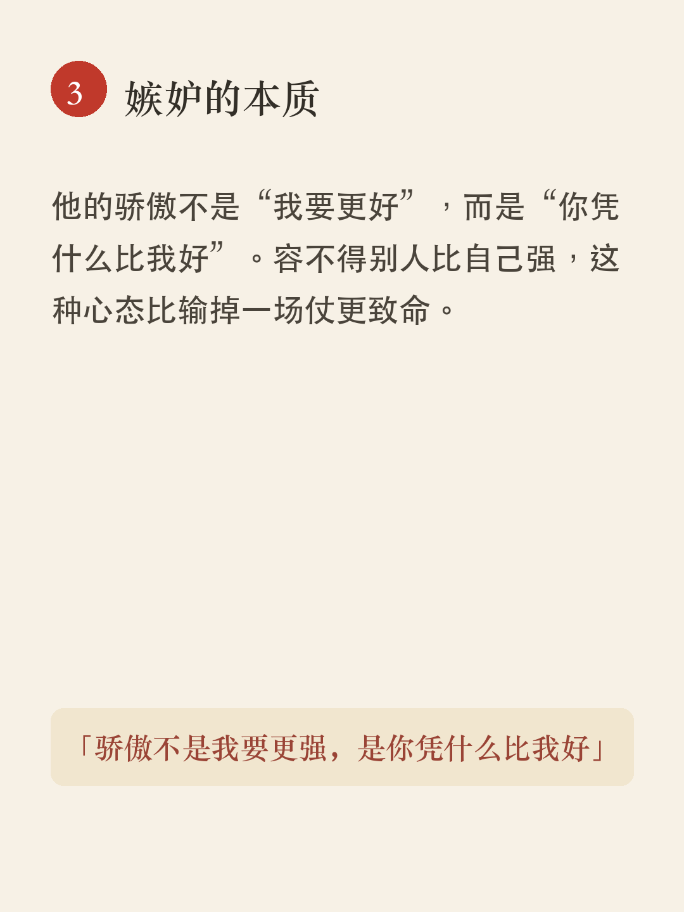
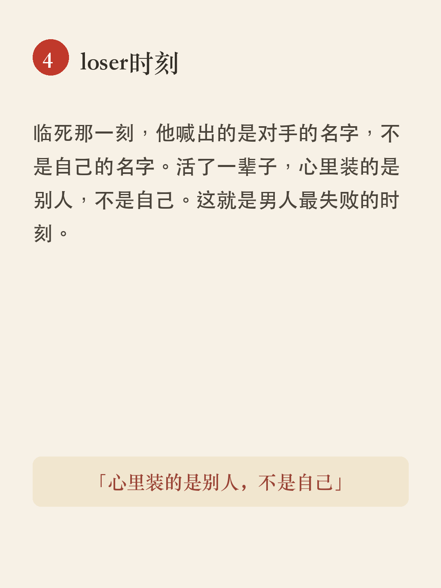
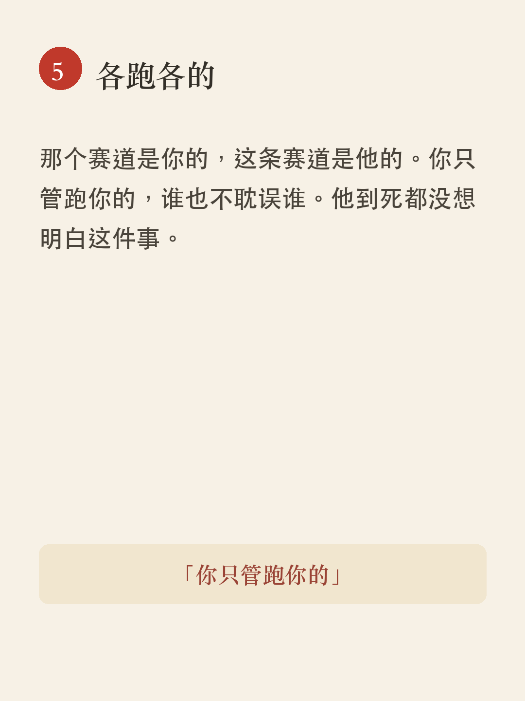
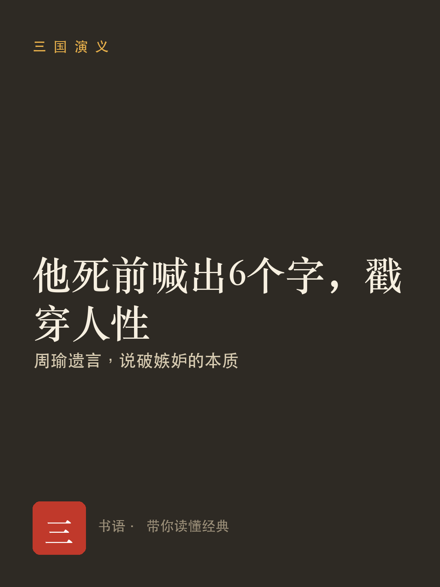
口播稿全文
你知道吗，三国里死得最憋屈的英雄，不是死在战场上，是死在自己手里。
周瑜，临死前仰天长叹八个字——“既生瑜，何生亮”，然后叫了几声，没了。三十六岁。
这不是能力的问题。他是东吴年轻的大都督，在赤壁以火攻破敌，功业震天下。可他死的时候，材料里写得很清楚——“怒气填胸，坠于马下”。谁让他怒？周瑜先已怒气填胸坠于马下，随后军士传言：“玄德、孔明在前山顶饮酒取乐。”瑜闻言大怒；接着又闻刘封、关平截住水路，愈怒；再收到诸葛亮劝阻西川的信，方才“长叹一声”；最后人醒了，仰天喊出那八个字，死了。
你发现没有，他不是输给诸葛亮的计谋，是输给一口气。
那口气叫什么？材料没写他自己怎么说，但旁边人看得清楚。鲁肃见孔明如此悲切，亦为感伤，自思曰：“孔明自是多情，乃公瑾量窄，自取死耳。”东吴众将读罢祭文后痛哭，也说：“人皆虚言也。”——大家都以为他俩不睦，可你看那祭文写得情真意切，诸葛亮是真的大哭了一场。
周瑜自己呢？他到死都在跟一个影子较劲。
这八个字“既生瑜，何生亮”，翻译成今天的话就是：老天既然造了我周瑜，为什么还要生一个诸葛亮？表面是感叹对手太强，本质是什么？是你不允许有人比你强。而且这个人还得是你的同龄人、你的同行者、你的参照系。他不是输在战场上，是输在——“我不能接受有个人在”。
这种心态，今天少吗？职场里有人见不得同事升职，朋友圈里有人受不了老同学过得比自己好，互联网上有人专门去骂那些比自己红的人。嫉妒的本质从来不是“我不够好”，而是“我不允许你比我好”。它不攻击自己的短板，专门攻击别人的长板。
周瑜够强了吧？可他在此次取西川之行中屡被触怒，甚至死了，材料里还写他“连叫数声”，叫的还是那口气。这口气把他从三十六岁带走。
你说他的能力输给诸葛亮了吗？没有。赤壁之战是他指挥的，火攻是他定的计，周瑜一辈子打的仗比诸葛亮多。可他死前最后想的，仰天长叹“既生瑜，何生亮”，连叫数声而亡。
所以“既生瑜，何生亮”这句话，不是输给对手，是输给自己的心态。
你身边有没有那种“瑜”？那个能力不差、人也努力、就是咽不下一口气的人？
他不是输在起跑线，是输在跑的时候一直扭头看旁边赛道的人。
周瑜死在三十六岁，不是因为他不够好，是因为他到死都没想明白一件事：那个赛道是你的，这条赛道是他的，各跑各的，谁也不耽误谁。
你只管跑你的。
🧑⚖️ 判官 76 · 补入周瑜临终荐鲁肃与“吾不欲尽忠报国，奈天命已绝矣”等关键原句，删除越界句（“众将痛哭”“打仗更多”），把“本质论”降格为审慎推断，以证据驱动胜于抒情定性。
维度 钩子4 清晰4 收获3 透彻3 忠实3 论证诚实3 节奏4 · 锚 [第五十七回·周瑜临终之叹]
82洞见scene公版✓ 判官过审分久必合：历史是个圈
🎬 三国的故事用一个词就能概括，可惜没人愿意相信。
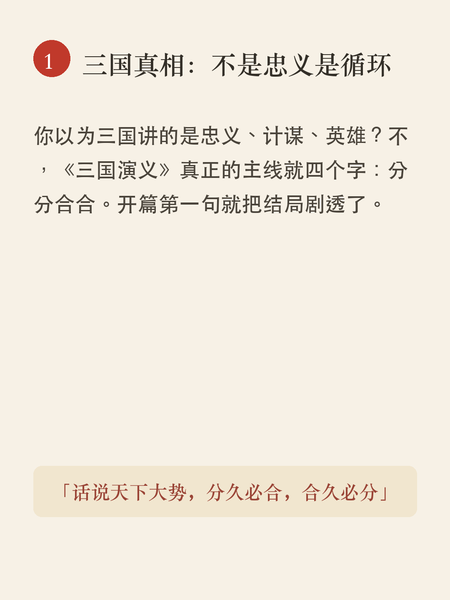
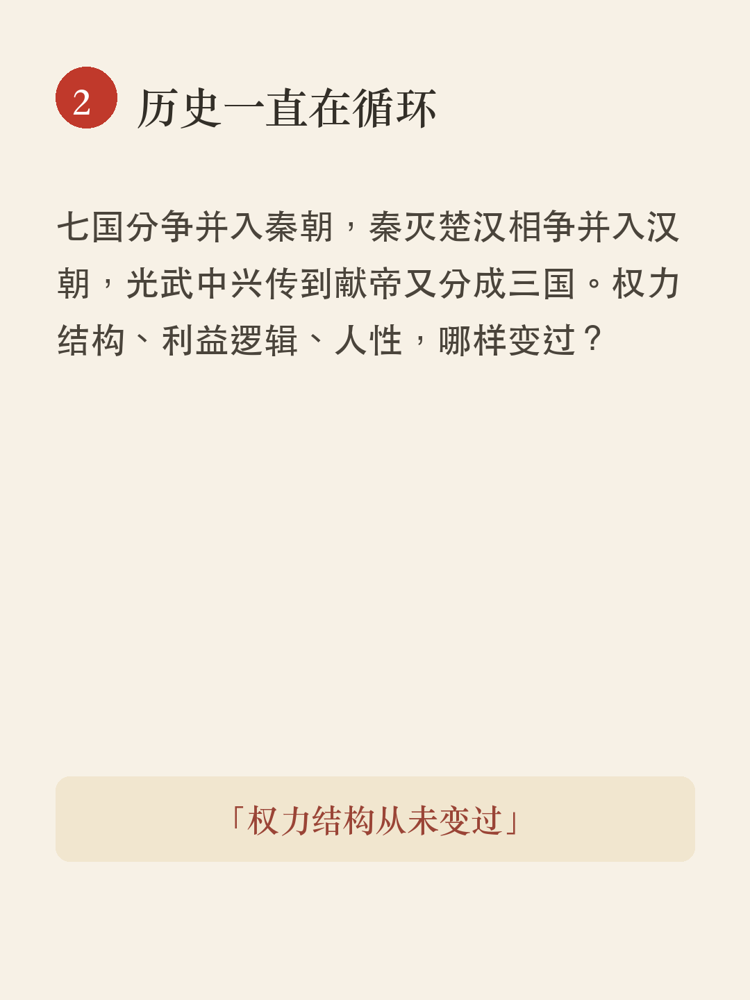
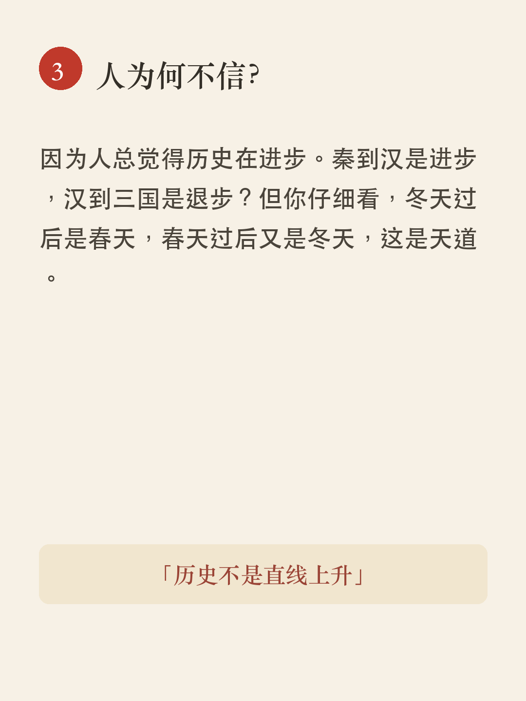
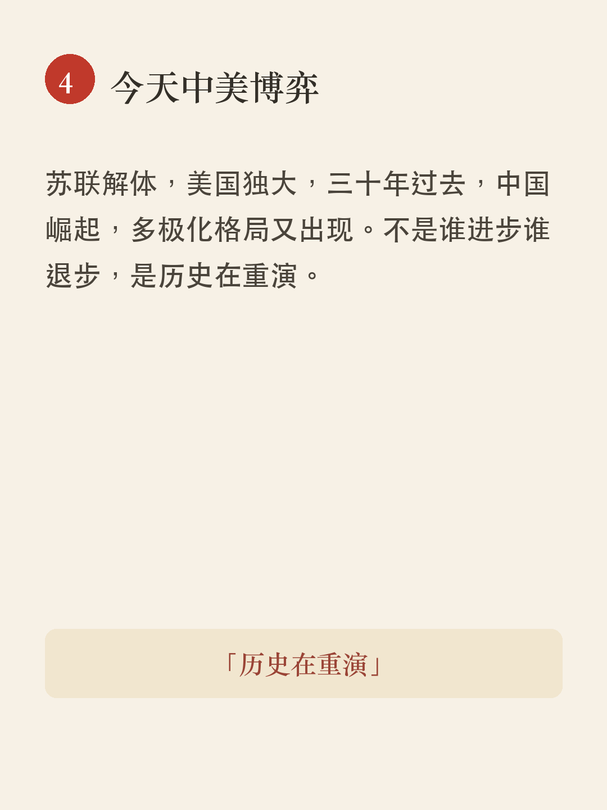
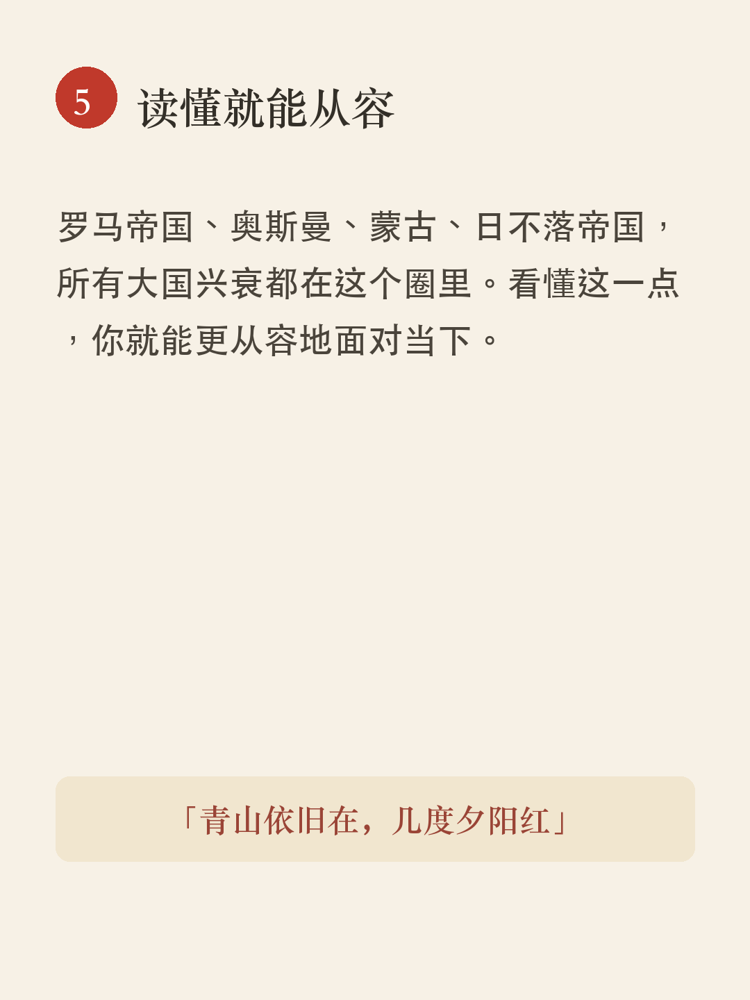
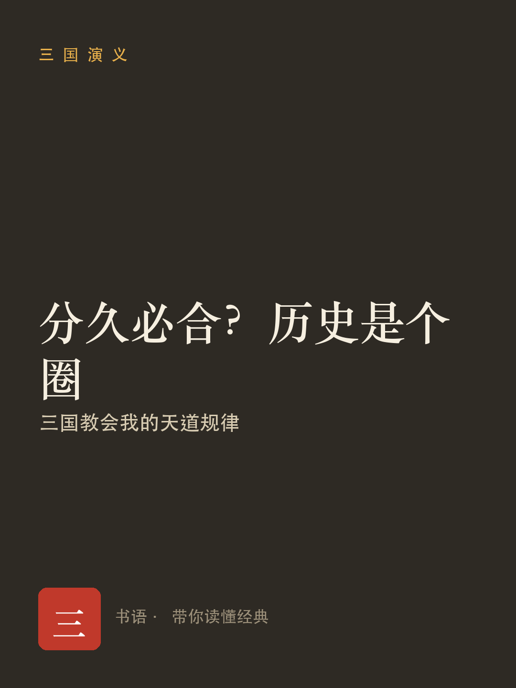
口播稿全文
三国的故事，用一个词就能概括——你信吗？
不是“忠义”，不是“计谋”，不是“天下”——而是“循环”。
《三国演义》这本书有意思在哪？它的开头和结尾，前后呼应、互为表里。开篇第一回劈头就写：“话说天下大势，分久必合，合久必分。”然后掰着指头给你算：周末七国分争，并入于秦；秦灭之后，楚汉分争，并入于汉；汉朝一统天下，传到献帝，又分为三国。你看，这是个圈啊。
可它没有停在三国。它一直写到了晋。写到孙皓投降司马炎，写到“三国归于晋帝司马炎，为一统之基矣”。然后结尾原文是这么说的：“此所谓‘天下大势，合久必分，分久必合’者也。”
一个圆，画完了。
中间那一百二十回的惊天动地、英雄辈出、刀光剑影、合纵连横——这十二字可视为全书重要母题与叙事框架之一。开篇有历史演进的分合案例，末章有总结性论断，其间如诸葛亮六出祁山、姜维九伐中原、邓艾偷渡阴平、晋最终灭吴，无一不在印证这种循环往复的历史节奏。有人会说这是套路，但你仔细想想，它不是套路，它是《演义》反复演绎的母题。
书末引后人古风有句，我每次读到都觉得后背发凉：“纷纷世事无穷尽，天数茫茫不可逃。鼎足三分已成梦，后人凭吊空牢骚。”
什么意思？后人再怎么感慨，也改变不了这个循环。
所以你今天看中美博弈、看大国兴衰、看世界格局，你觉得你在看一出全新的戏吗？
《演义》所呈现的历史循环观自有其文学力量。你方唱罢我登场，分分合合数千年的历史节奏，在演义的世界里似乎从未改变。但这终究是文本提供的阅读体会；若要外推到更宏观的现实层面，还需要更多证据和边界考量——毕竟，历史从不简单重复任何单一剧本。
🧑⚖️ 判官 82 · 把“孫皓投降”的對象說精確（先降王濬後面君），並再補兩處書內細節例證，可顯著提升“透徹度”。
维度 钩子5 清晰4 收获4 透彻3 忠实4 论证诚实5 节奏4 · 锚 [第一回开篇论点, 第一二○回结尾论点]
78故事scene公版✓ 判官过审上方谷那场雨，改写了三国历史
🎬 诸葛亮把司马懿烧得只剩一口气——然后天降大雨，司马懿跑了。
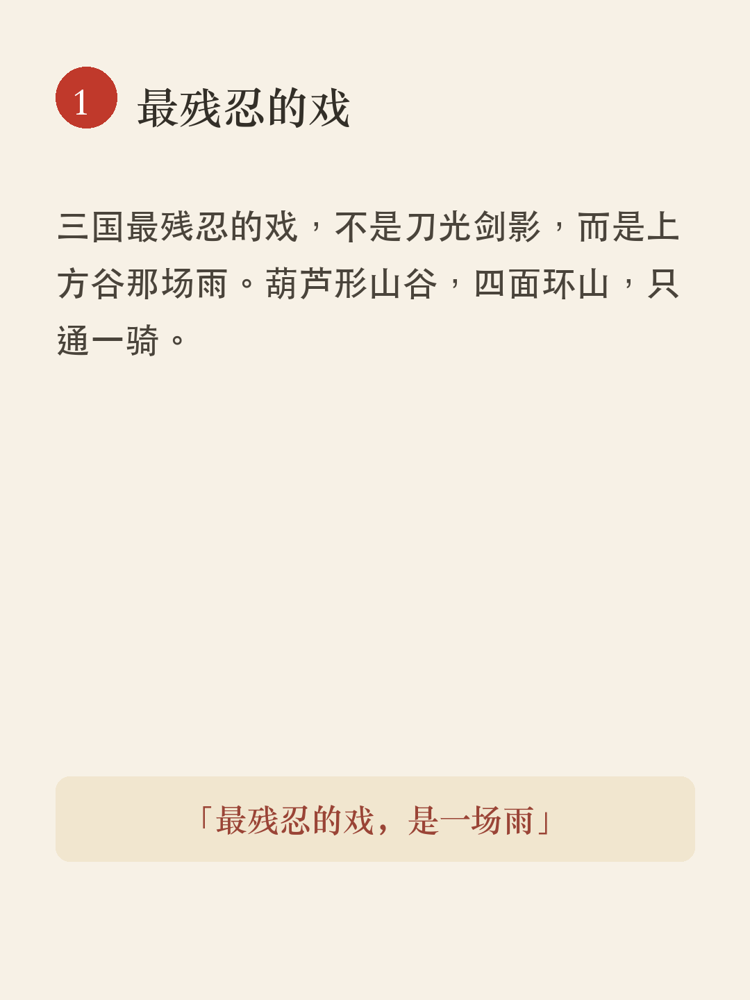
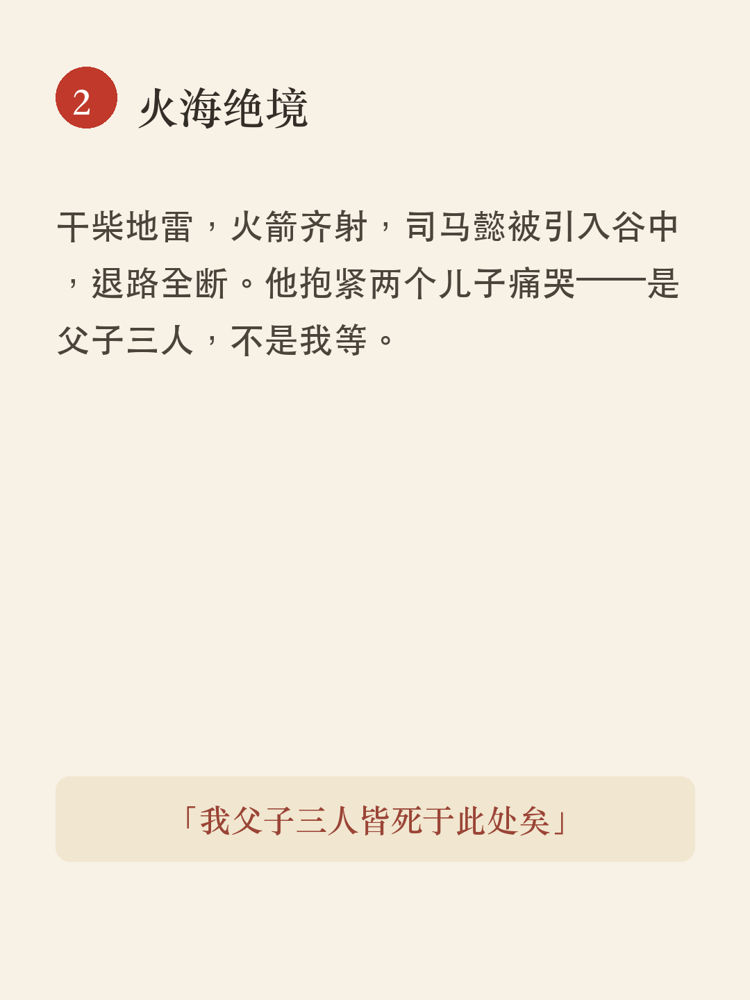
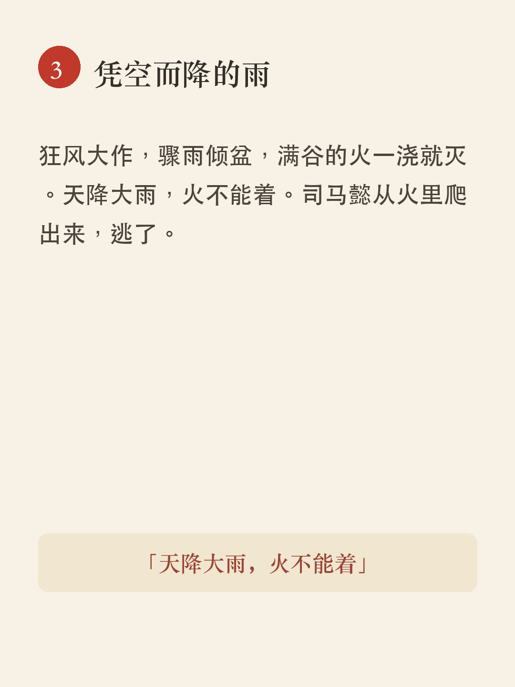
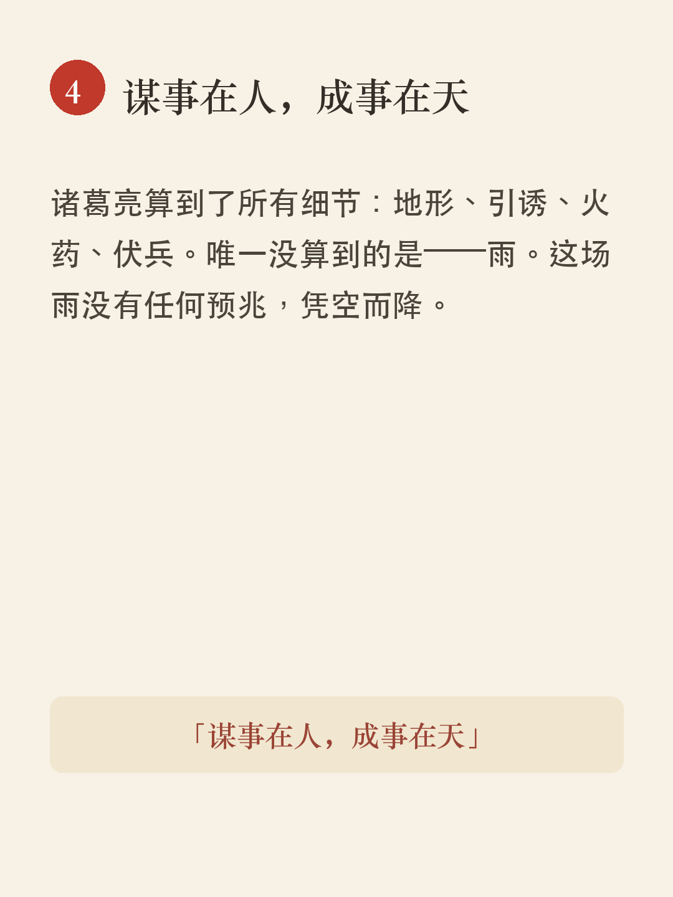
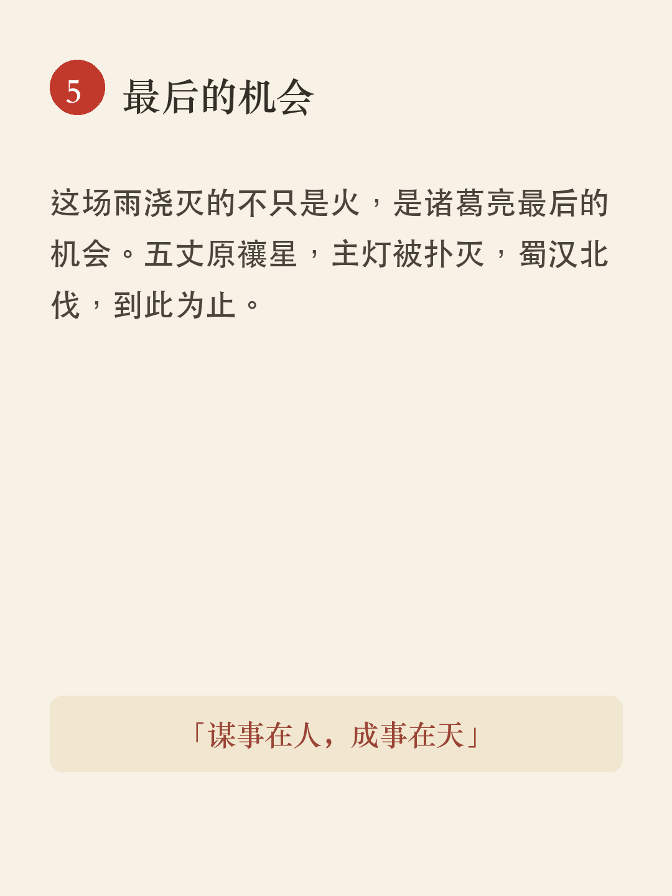
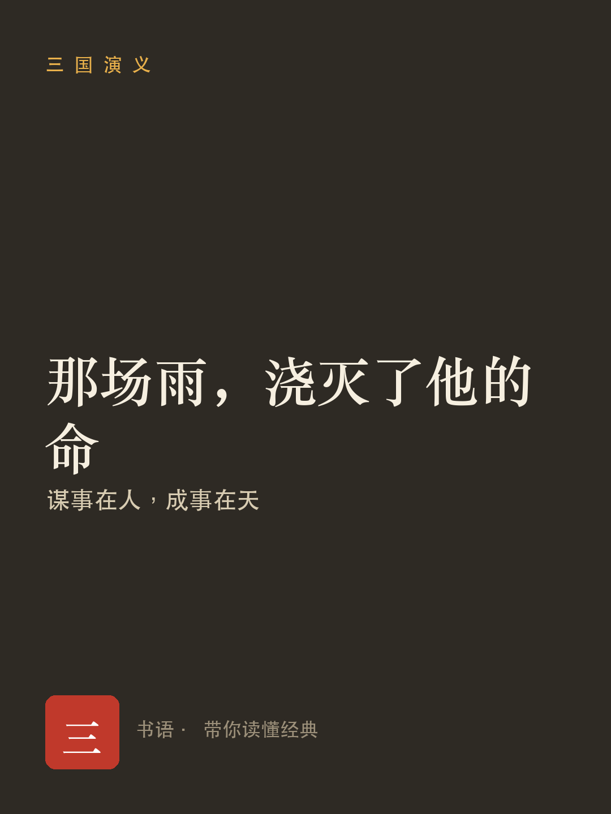
口播稿全文
上方谷那场雨，改写了三国历史。
司马懿被魏延引进谷口，火把一丢，满山火箭齐发，地雷轰鸣。草房上的干柴，刮刮杂杂烧起来，火势冲天。司马懿抱着两个儿子瘫在地上，仰天大哭——他知道自己完了。这一把火，是他人生最后一次大败，也是诸葛亮六出祁山最接近成功的一刻。
然而就在这时，狂风大作，黑气漫空，一声霹雳，骤雨倾盆。满谷的火，灭了。地雷不震，火器无功。司马懿从地上爬起来，眼睛里重新有了光。他带着两个儿子拼命冲杀，杀出谷去，活着回去了。
诸葛亮站在山上，亲眼看着火起，又亲眼看着雨落。他算到了魏延的诈败，算到了司马懿的多疑，算到了干柴、地雷、七星旗暗号。他把每一步都排得天衣无缝。但他漏算了一个人——老天的脾气。
这一段，原文里诸葛亮说的那句话，后世念了一千多年。他说："谋事在人，成事在天，不可强也。"
这句话从诸葛亮嘴里说出来，比任何人的失败都更让人心里发凉。为什么？因为他是三国里最能算的那个人。草船借箭算雾，空城计算心，火攻算风，每一步他都算赢了。只有这一次，他发现老天根本没站在他那边。
更残忍的是，这场雨不是巧合。原文写的是"忽然狂风大作，黑气漫空"，天象本身就是那个时代最强大的隐喻——连老天都在帮司马懿。你再看看全书，诸葛亮一辈子逆天改命：借东风是跟老天借的，祈禳北斗是想跟老天再偷几年寿命，最后魏延一脚踢灭主灯，把最后一点希望也踢碎了。他这一生，都在跟天抢时间。而上方谷那场雨，是老天第一次正面出手，告诉他：你算得再精，也有我说了算的时候。
有意思的是，司马懿冲出谷口之后，原文写他"大喜"。但你看前面，诸葛亮送他巾帼女衣，他当着使者的面说"孔明视我为妇人"，还问使者诸葛亮"寝食及事之烦简"。使者说他"食少事烦"，诸葛亮听完叹了一句"彼深知我也"。司马懿哪里是不知道？他是太知道了。他知道诸葛亮活不长，知道蜀汉耗不起。所以他选择不出战。不是不敢打，是根本不跟你打——我熬死你。
所以上方谷这场雨浇灭的不只是火，它浇灭的是诸葛亮最后的机会。之后的故事所有人都知道了，五丈原禳星，主灯被扑灭，诸葛亮死在了军营里。蜀汉的北伐，到此为止，再无悬念。
你回头再想那场大雨，会觉得老天是真的绝。它没让司马懿死在火里，也没让诸葛亮赢在火里——它让他输在最接近成功的那一刻。让你看着希望烧起来，再亲手浇灭它。这不是老天在帮谁，这是老天在告诉所有人：有些事，算到了也没用。
谋事在人，成事在天。诸葛亮懂这个道理，但他花了一辈子才真正接受它。这句话从他嘴里说出来，不是认命，是认完命之后，依然选择去做。这就是他最让人心疼的地方。
🧑⚖️ 判官 78 · 收口在本回锚文，少用“最后一次/六出祁山/北伐终结”这类一锤定音，并纠正“魏延一脚踢灯”等细节；把“天助”改成解释性而非断言。
维度 钩子5 清晰4 收获4 透彻3 忠实3 论证诚实3 节奏5 · 锚 [第一○三回上方谷大雨]
85故事scene公版✓ 判官过审三顾茅庐：诚意到底值多少钱
🎬 一个人去找另一个人，前两次都被赶出来——第三次，他成了皇帝。
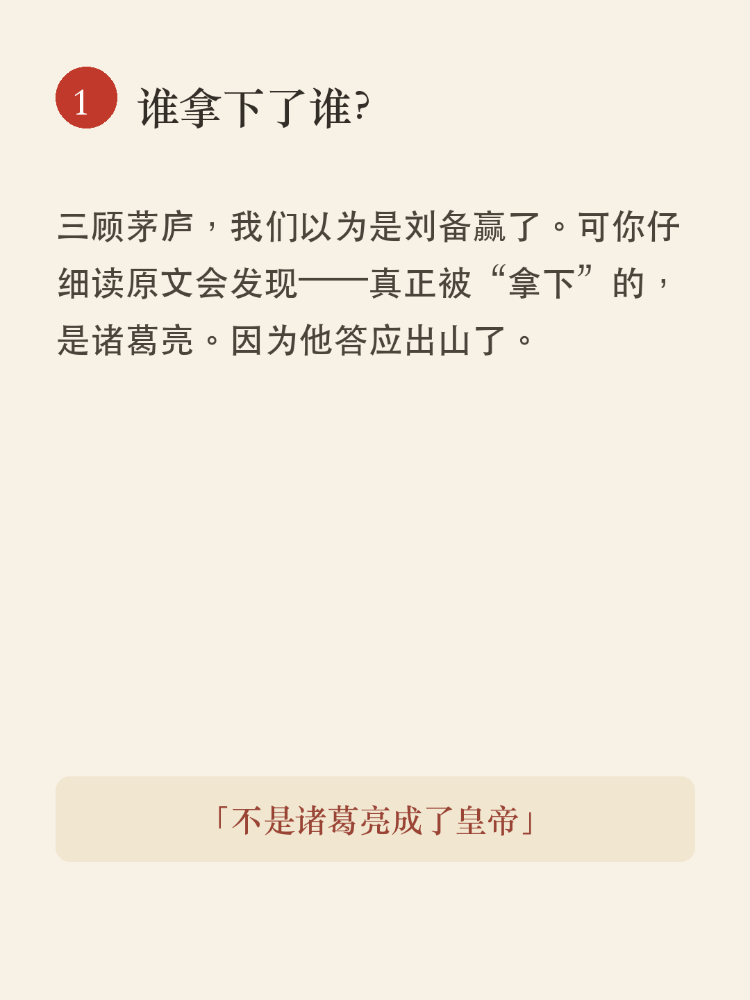
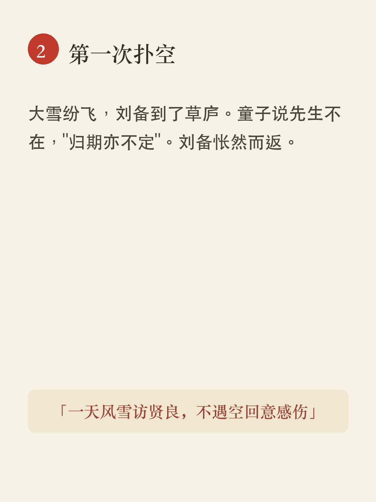
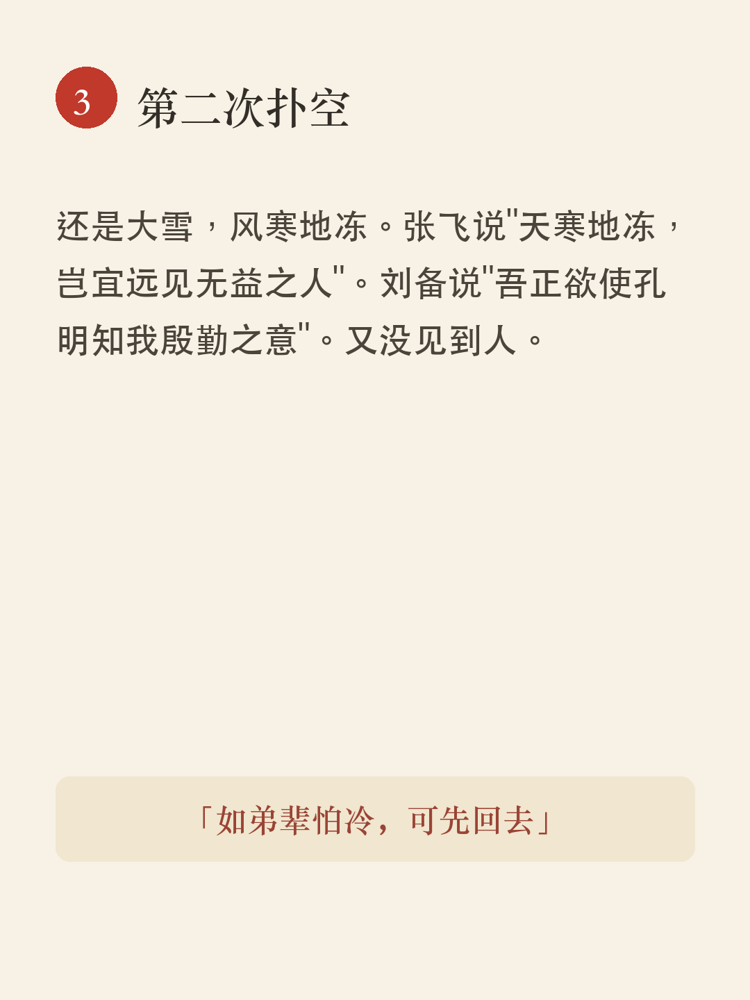
口播稿全文
一个人去找另一个人，前两次不遇，第三次方得相见，此后刘备终得卧龙相助。
不是诸葛亮成了皇帝——是他答应出山了。
你没听错。三顾茅庐的故事，我们从小听到大，都以为是刘备赢了。可你仔细读过原文会发现：真正被“拿下”的，从来不是诸葛亮。
先看刘备的处境。他来找诸葛亮的时候，简历惨不忍睹——自称汉室末胄，时寄居在新野小城，兵不过几千，主力仍倚重关、张等少数猛将。用今天的话说，就是一个连续创业失败五次、团队加起来不到十个人的落魄老板。
再看诸葛亮的处境。徐庶、司马徽皆曾荐举孔明，其价值已被业内最顶尖的两个推荐人盖章认证了。
这样的天才，凭什么出山？
关羽张飞想不通。关羽说：“这人有虚名无实学，故避而不敢见。”张飞更狠，说要拿麻绳把人绑来。
换你是诸葛亮，你会觉得谁值得跟？
但刘备做了一件所有老板都不会做的事。他当着张飞的面讲了一个故事：当年齐桓公想见一个在城郊种田的野人，五次求见才见上一面——“况吾欲见大贤耶？”
这句话的潜台词是什么？我刘备，今天来请你，不是施舍，是求学。
第三次，他终于等到了。诸葛亮在草堂睡午觉，翻了个身，又睡过去了。张飞气得要去屋后放火。关羽按住他。三人又立了一个时辰。
你注意这个细节——原文写的是“玄德徐步而入，见先生仰卧于草堂几席之上。玄德拱立阶下”。半晌，先生未醒。关、张在外立久，不见动静，入见玄德，犹然侍立。张飞大怒。一个皇族，拱手站在阶下，等一个二十七岁的年轻人睡醒。
然后诸葛亮吟了那首诗：大梦谁先觉，平生我自知，草堂春睡足，窗外日迟迟。
诸位，什么叫名士派头？这就是。睡到日上三竿，醒来第一句话问的是“有俗客来否”——言下之意，来了多久了？童子答：“立候多时。”
诸葛亮这才起身更衣，出迎。
好，现在关键来了——诸葛亮答应出山，是因为刘备站得够久吗？
不是。
原文中刘备说了一段话，是真正的转折点。他说：“汉室倾颓，奸臣窃命，备不量力，欲伸大义于天下，而智术浅短，迄无所就。惟先生开其愚而拯厄，实为万幸。”
这句话翻译过来是：我知道自己不行，但我知道这个时代需要有人站出来。我来请你，不是让你给我打工，是让你帮我把这件该做的事做成。
诸葛亮听完，规划了三分天下的蓝图，然后说了一句极重的话：“将军既帝室之胄，信义著于四海，总揽英雄，思贤如渴。”
——信义著于四海。这五个字，是诸葛亮对刘备的定性。
不是说你有多少兵，不是说你有多少钱，而是说，你这个人，靠谱。
所以诸葛亮出山前对弟弟说了一句：“吾受刘皇叔三顾之恩，不容不出。”
这才是三顾茅庐的真相——诚意从来不是单方面的付出，而是双向的验证。刘备用三次拜访证明：我愿意放下身段；诸葛亮用隆中对证明：我值得你放下身段。
诚意值多少钱？值一个卧龙出山。值三分天下的开局。
但前提永远是：你得先让自己值得那个人的选择。
🧑⚖️ 判官 85 · 去掉夸张比喻里的具体数字，并补一句“孔明先辞、玄德泣请而后许”的关键桥段，因果链就更完整、更有说服力。
维度 钩子5 清晰4 收获4 透彻4 忠实4 论证诚实4 节奏4 · 锚 [第三十八回·三顾茅庐与隆中对, 第三十九回·吾得孔明犹鱼得水]
84冷知识scene公版✓ 判官过审周瑜其实不是被气死的
🎬 罗贯中骗了你一千多年——周瑜到底是怎么死的？
口播稿全文
长期流传的印象可能误导了我们——周瑜到底是怎么死的？
你以为他是被诸葛亮活活气死的？三气周瑜，吐血而亡，教科书级别的嫉妒受害者。
但你翻回原著第五十七回，仔细看周瑜临死前的那段描写：他说了一句你可能没注意的话——“奈天命已绝矣”。
天命已绝。不是“奈诸葛亮太可恨”，不是“奈子亮太欺负人”，是“天命”。
再看原文：他先是怒气填胸，坠于马下；被人救回船上，又听说刘备和孔明在前山饮酒取乐，大怒，发誓要取西川；接着收到诸葛亮的劝阻之书，长叹一声；唤左右取纸笔作书上吴侯，复聚众将言“天命已绝”，言讫昏绝。
昏过去了。醒来之后才仰天长叹“既生瑜，何生亮”，连叫数声而亡。
这个顺序才是关键——他是先昏厥，然后才发出的那句感慨。
三十六岁，赤壁一把大火烧退曹操，正是建功立业的年纪，怎么会突然就倒了？周瑜自己说了：天命已绝。
什么是天命？原文没有明说。文中只写了“怒气填胸”“愈怒”，以及阅孔明书后长叹、言“天命已绝”而昏厥，随后感叹而亡。
愤怒显然是直接诱发事件，但原文并未说明愤怒是唯一原因还是诸多因素之一。
所以本回的死亡场景，其实并非被一句话噎死，而是先昏厥后感叹而亡。“三气周瑜”的叙事是否属于文学加工，需要综合更多章节来判断。
你记住的不是周瑜有多拼命、多可惜，你记住的是那句“既生瑜何生亮”。
这正是罗贯中的笔力——用一个金句，把一个人的一生和死亡都概括了。哪怕这个概括，和文本所呈现的细节有所出入。
🧑⚖️ 判官 84 · 建议把关键句完整直引（“吾不欲尽忠报国，奈天命已绝矣”）并少出锚文范围；可补充同回鲁肃、夜观天文等细节以增强厚度与旁征博引。
维度 钩子4 清晰4 收获4 透彻3 忠实4 论证诚实5 节奏4 · 锚 [第五十七回·既生瑜何生亮]